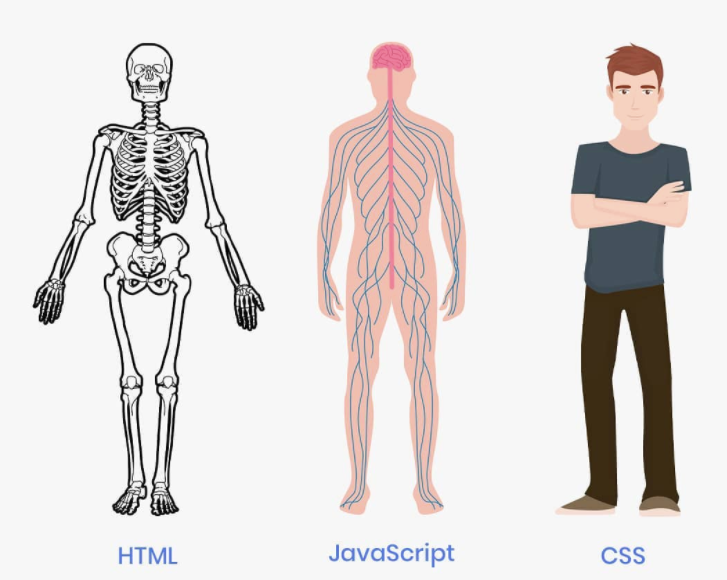
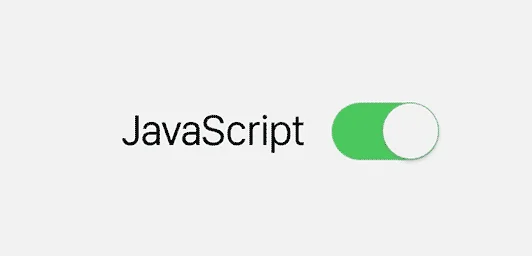

Full stack development refers to the end-to-end application software development,
including the front end and back end. The front end consists of the user interface,
and the back end takes care of the business logic and application workflows.
Full stack web developers have the ability to design complete web applications and websites. They work on the frontend, backend, database and debugging of web applications or websites.
Full-Stack Developer - They are able to do both front and back end development (which applies for both mobile and web).
Skills Needed for Front End:
Visualisation(F-END):

[HTML]
(HYPER TEXT MARKUP LANGUAGE)
This is like the skeleton of the body, because it gives it a website structure. Every site you visit is built using HTML, which handles the structure and the content of the site.
HTML stands for Hyper Text Markup Language. It is used to design the front end portion of web pages using markup language. HTML is the combination of Hypertext and Markup language. Hypertext defines the link between the web pages. The markup language is used to define the text documentation within tag which defines the structure of web pages.
[CSS]
(Cascading Style Sheets)
Think of CSS as the aesthetics and muscles of the body! CSS makes a site beautiful and interesting to look at. Just like in your body where muscles and skin make you beautiful, CSS does the same for a website. It sets the fonts and colors, adds images, and even helps make the site responsive.
Cascading Style Sheets, fondly referred to as CSS, is a simply designed language intended to simplify the process of making web pages presentable. CSS allows you to apply styles to web pages. More importantly, CSS enables you to do this independent of the HTML that makes up each web page.
[Js] 
(JavaScript)
like the brain of the operation that tells everything how to behave. JS is a gamechanger in web development as it gives a site all its functionality.
JavaScript is a famous scripting language used to create the magic on the sites to make the site interactive for the user. It is used to enhancing the functionality of a website to running cool games and web-based software.